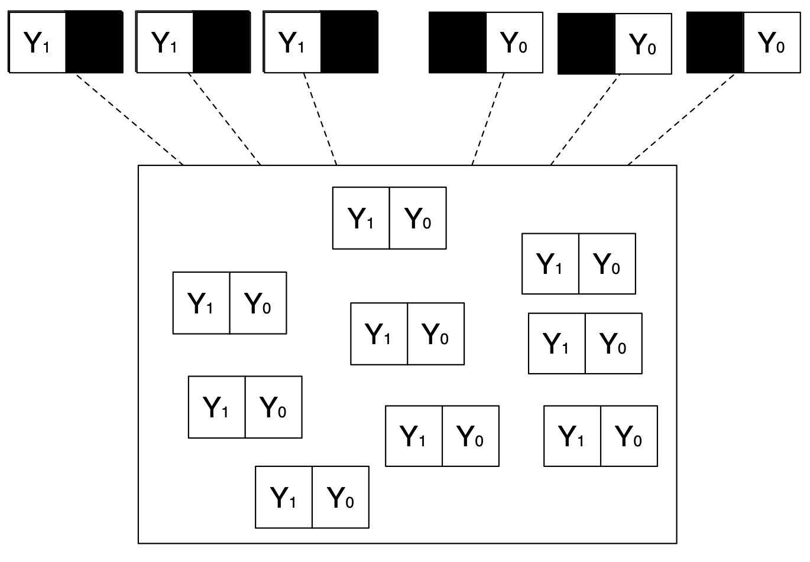
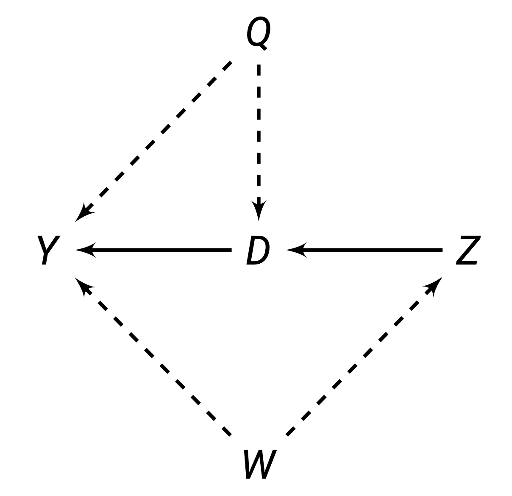
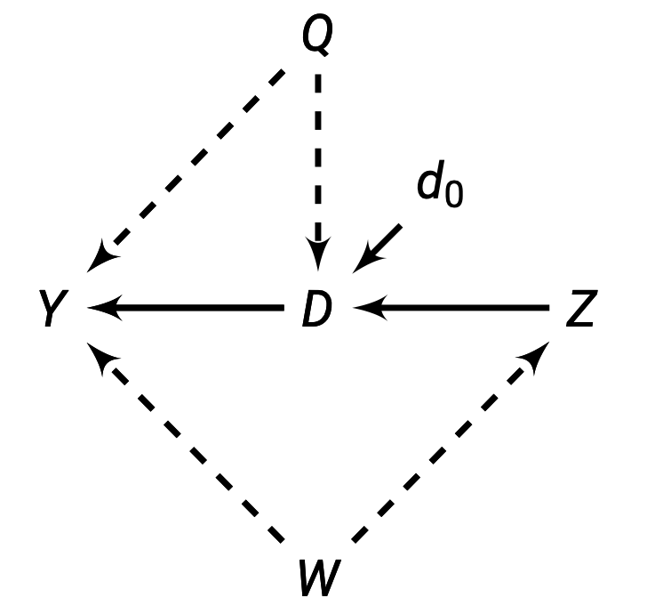

This chapter introduces the main causal frameworks (potential outcomes, causal graphs), the main causal estimands used in causal inference, and the idea of selection bias and confounders.
Potential Outcomes Framework
Treatment Variables
In causal inference, we are interested in how one variable D causes some effect on some outcome variable Y.
D is our treatment variable. The indicator of treatment for each unit i is D_i.
D_i = \begin{cases} 1 \quad \text{if unit } i \text{ recieved the treatment} \\ 0 \quad \text{otherwise} \end{cases}
Causal variables/treatments must occur before the outcome. A variable cannot cause something to occur in the past.
Causal variables/treatments must be able to be manipulated (in order to imagine a world where the treatment did not occur).
- For example, D cannot be sex assigned at birth, ethnicity, etc.
- For example, major global events (how did 9/11 cause the Arab spring?)
Potential Outcomes
Imagine there are two hypothetical parallel worlds - one where unit i receives the treatment D, and one where unit i does not receive the treatment D. Everything else in these worlds is identical.
Potential Outcomes for unit i are denoted:
Y_{di} =\begin{cases} & Y_{1i} \quad \text{Outcome for unit } i \text{ when } D_i = 1 \\ & Y_{0i} \quad \text{Outcome for unit } i \text{ when } D_i = 0 \\ \end{cases}
Alternative notation includes Y_i(d), y_i^d.
For example, imagine we are interested in finding the effect of democracy D on GDP growth Y. Potential outcome Y_{1i} is the potential GDP growth of country i if they were a democracy, and outcome Y_{0i} is the potential GDP growth of a country i if they were not a democracy.
Observed Outcomes and “Missing Data”
Of course, there is not two parallel worlds with 2 potential outcomes. In the real world, each unit i either receives treatment D, or does not. We do not observe the other potential outcome.
Y_i is the observed outcome for unit i. This is given by formula:
Y_i = D_i \cdot Y_{1i} + (1-D_i) \cdot Y_{0i}
If we plug in D_i = 0, 1, we get the observed outcomes:
Y_i = \begin{cases} Y_{1i} \quad \text{if } D_i = 1 \\ Y_{0i} \quad \text{if } D_i = 0 \\ \end{cases}
Before the treatment (A priori), both potential outcomes could be observed.
After the treatment, one is observed, and the other is counterfactual. For any given experiment, only one will ever be seen, and the counterfactual will never be seen (missing data problem).
Potential Outcomes can be visualised with the Neyman Urn Model.
Before the treatment, we have a box (we cannot see) with both potential outcomes.

Then, when we apply treatment, we stick our hand into the box that we cannot see, and pull out one observed outcome.

We are essentially sampling from potential outcomes to get observed outcomes.
This missing data problem is called the fundamental problem of causal inference.
Stable Unit Treatment Value Assumption
The above given observed and potential outcome frameworks depends on the Stable Unit Treatment Value Assumption (SUTVA).
\underbrace{Y_{(D_1, D_2, \dots, D_N)i}}_{\text{Observed treatments}} = \underbrace{Y_{(D_1', D_2', \dots, D_N')i}}_{\text{All alternative treatments}}
- Where D_1, D_2, \dots D_N are the observed treatment status D_i of all observations i = 1, \dots, N.
- Where D_1', D_2', \dots, D_N' are any alternative treatment status D_i of all observations.
Or more intuitively, the potential outcomes of unit i only depends on their own treatment status, and no other unit’s treatment status. The treatment is also the same for everyone (treatment is stable and consistent)
Spill-over effects: If we are testing a new curriculum, one student j getting the new curriculum may teach their friend i the new curriculum, thus affecting the potential outcomes of i.
Contagion: If we are studying a disease, diseases can spread, so another unit j getting a disease affects the potential outcomes of unit i.
Dilution: If we are studying vaccines - there is herd immunity - other people getting the vaccine also reduces our chances of getting the disease.
Variable levels of treatment: If we are doing a drug trial, if some people got two doses, while others only got one dose. This is not a consistent treatment.
Technical errors: If someone who is supposed to be treated accidentally is not treated. This is not a consistent treatment.
When SUTVA is violated, potential outcomes become very messy, and we no longer have the neat framework as before.
Causal Estimands
Individual Treatment Effect
Remember the potential outcomes from parallel worlds Y_{1i} and Y_{0i}.
Since these two parallel worlds are identical except for the fact one receives the treatment D and the other does not, the causal effect of D should logically be the difference between the potential outcomes of these two worlds.
Thus, the individual treatment effect of a unit i is:
\tau_i = Y_{1i} - Y_{0i}
This is the specific treatment effect for a specific unit i. This cannot be observed, because we do not see both potential outcomes for the same unit i.
This is also very hard to estimate, as we cannot reliably fill in the missing potential outcome for any one unit i. Thus, we almost never use individual treatment effects, and use group treatment effects.
Average Treatment Effect (ATE)
ATE is a group-level causal estimand.
Consider a population of units i = 1, \dots, N.
The population has potential outcomes represented in two (only partially observed) vectors:
\begin{split} & Y_1 = (Y_{11}, Y_{12}, \dots, Y_{1N}) \\ & Y_0 = (Y_{01}, Y_{02}, \dots, Y_{0N}) \end{split}
We compare these two vectors of potential outcomes. The most common way to do this is to use their expected values.
The Average Treatment Effect is defined as:
\begin{split} \tau_{ATE} & = E(Y_{1i} - Y_{0i}) \\ & = \frac{1}{N_1} \sum\limits_{i=1}^N D_i (Y_{1i} - Y_{0i}) \end{split}
We cannot calculate this with observed data - since we need all potential outcomes to do this. We can estimate this (covered throughout this course).
Average Treatment Effect on the Treated (ATT)
An alternative estimand to the ATE is the Average Treatment Effect on the Treated (ATT):
\begin{split} \tau_{ATT} & = E(Y_{1i} - Y_{0i} \ | \ D_i = 1) \\ & = \frac{1}{N_1} \sum\limits_{i=1}^N D_i (Y_{1i} - Y_{0i}) \quad \text{where } N_1 = \sum\limits_{i=1}^ND_i \end{split}
This is the causal effect of only variables who have received the treatment.
When does \tau_{ATT} = \tau_{ATE}?
- When the expectation of the potential outcomes of both the treated and control are the same, then the two equal each other.
The opposite is also true: if the expectation of the potential outcomes of both the treated and control are different, then the two are not equal.
Conditional Average Treatment Effect (CATE)
The conditional average treatment effect is any treatment effect where there is a condition on a characteristic/covariate:
\tau_{CATE}(x) = E(Y_{1i} - Y_{0i} \ | \ X_i = x)
This is the causal effect of only variables who meet the condition of the covariate specified. For example, you could find the conditional average treatment effect of only women (so the covariate which we are conditioning on is gender).
This is often used for tailoring products/medicine/advertising to certain groups of people.
This estimand will go by other names, including the Local Average Treatment Effect (LATE).
Selection Bias and Confounders
Naive Estimator and Selection Bias
A natural way to estimate the ATE is to use a naive estimator: find the average difference of observed outcomes. This is called the naive estimator:
\begin{split} \hat\tau_{naive} = \underbrace{E(Y_i|D_i = 1)}_{\text{Observed }Y \text{ for treatment}} - \underbrace{E(Y_i|D_i = 0)}_{\text{Observed }Y \text{ for control}} \end{split}
However, there is an issue - we can show this with algebra:
\begin{split} \hat\tau_{naive} & = E(Y_i|D_i = 1) - E(Y_i|D_i = 0) \\ & = E(Y_{1i}|D_i = 1) - E(Y_{0i} | D_i = 0) \\ & = E(Y_{1i}|D_i = 1) - E(Y_{0i} | D_i = 0) + \underbrace{E(Y_{0i}|D_i = 1) - E(Y_{0i}|D_i = 1)}_{\text{This just equals 0, so we can add it}} \\ & = \underbrace{E(Y_{1i}|D_i = 1)- E(Y_{0i}|D_i = 1)}_{\tau_{ATT}} + \underbrace{E(Y_{0i}|D_i = 1) - E(Y_{0i} | D_i = 0)}_{\text{Selection Bias}} \\ \end{split}
We can see that our naive estimator produces the \tau_{ATT} plus an extra bit (called the selection bias). Thus, our naive estimator is biased, so we should be careful about using this naive estimator (correlation does not equal causation).
Confounders
Take the selection bias formula from above:
\underbrace{E(Y_{0i}|D_i = 1)}_{Y_{0i}\text{ for treatment}} - \underbrace{E(Y_{0i} | D_i = 0)}_{Y_{0i}\text{ for control}}
If selection bias is non-zero, this essentially states that the expected potential outcome before treatment Y_{0i} between the treatment and control groups is not equal.
Or in other words, the treatment and control groups have some other variable causing differences even before treatment has begun. This implies that the differences between the treatment and control group may not be due to treatment D, but due to the underlying differences before treatment even occurred.
Confounders are variables that cause the differences between treatment and control groups before the treatment has started. Confounders are correlate with both the treatment variable and the outcome.
This is why correlation does not equal causation - if the treatment and control group are different before we start the experiment, we cannot say the difference between the two is purely a result of treatment D.
Omitted Variable Bias in Regression
Let us say we are interested in finding the relationship between treatment D and outcome Y. However, there is a confounding variable, X, that is correlated with both D and Y.
We could run a simple linear regression with just D and Y (essentially a measure of correlation between the two):
Y_i = \beta_0^S + \beta_1^SD_i + u_i^S
We could also run a multiple linear regression with D, confounder X, and Y. This accounts for the impact of the confounder, and “partials out” the effect of the confounder (this is given by the Regression Anatomy Theorem):
Y_i = \beta_0 + \beta_1D_i + \beta_2 X_i + u_i
Our simple linear regression coefficient \beta_1^S (a measure of correlation) is thus wrong for the causal effect - it fails to partial out the effect of confounder X. We can quantify “how wrong” \beta_1^S is with the omitted variable bias formula:
\beta_1^S = \beta_1 + \beta_2\delta_1
- Where \delta_1 is the coefficient of a regression between outcome X and explanatory variable D.
We have a short and long regression, where the long includes confounder X:
\begin{split} Y_i & = \beta_0^S + \beta_1^SD_i + u_i^S \\ Y_i & = \beta_0 + \beta_1D_i + \beta_2X_i + u_i \end{split}
Now consider an auxiliary regression, where the omitted variable (confounder) X is the outcome variable, and D is the explanatory variable:
X_i = \delta_0 + \delta_1 D_i + v_i
We can plug in the above X_i into our long regression, to get the entire long regression equation in terms of D_i:
\begin{split} Y_i & = \beta_0 + \beta_1D_i + \beta_2 X_i + u_i \\ & = \beta_0 + \beta_1 D_i + \beta_2(\delta_0 + \delta_1 D_i + v_i) + u_i \\ & = \beta_0 + \beta_1 D_i + \beta_2 \delta_0 + \beta_2\delta_1 D_i + \beta_2 v_i + u_i \\ & = \beta_0 + \beta_2 \delta_0 + (\beta_1+\beta_2\delta_1)D_i + \beta_2v_i + u_i \end{split}
The last equation is essentially a “recreation” of the short regression with only one explanatory variable. Note how the coefficient of D_i in this regression is (\beta_1 + \beta_2 \delta_1).
Thus, \beta_1^S = \beta_1 + \beta_2 \delta_1. Since \beta_1 is the true value of the relationship between D and Y (since it controls for the confounder), that means \beta_1^S is off by \beta_2 \delta_1.
Thus, \beta_2 \delta_1 is the omitted variable bias in the short regression. In conclusion - if we do not account for confounding variables, we will have bias in our causal estimations. Thus, correlation does not equal causation!
Directed Acyclic Graphs
Components of the Graphs
Causal Diagrams are a visual way to represent causal theories and frameworks, which allows us to visualise how variables interact with each other.
Each Directed Acyclic Graph (DAG) has the following components:
- Nodes: representing variables (which are also called vertices).
- Directed Edges: Arrows that encode one-way causal theories between variables. For example, we might believe Z causes X, so we will draw an arrow from Z to X. These connections are observable (solid) or unobservable (dashed).
Below is an example of a directed acyclic graph:

What does this diagram show?
- We have two unobserved variables: Q and Y
- We have three observed variables: Z, D, and Y.
- We can see the causal theories represented by arrows.
What can we learn from this diagram?
- Z \rightarrow Y is confounded by W: W is affecting who gets treatment Z, and causing Y. Thus, W is affecting who gets selected into treatment Z, and selecting your potential outcome Y. Thus, this is an example of selection bias.
- D \rightarrow Y is confounded by Q.
- Z \rightarrow D is not confounded, so we can estimate this causal effect.
Note: All these conclusions are only true if our causal theory is correct (we have specified all the possible variables, and we have specified the correct causal relationships).
Features of a Directed Acyclic Graph:
- They must be acyclic: This means that they are not circular - A does not terminate back at A.
- Non-Connections: The absence of relationships between variables.
Representing Interventions
Treatments (interventions by the researcher, for example) are when we determine one variable exogenously (such as by randomisation).
Or in other words, one variable is determined randomly externally, not caused by any variables within the directed acyclic graphs.
Treatments are represented by the do() operator. When the treatment is exogenous, we can break all the connections into that variable’s node.
This is because we are determining the value of the variable, not any other variables.

An intervention here is on variable D. That means the value of D is being chosen outside of this graph (by randomisation, or the researcher).
This allows us to delete the arrow between Q \rightarrow D and Z \rightarrow D. This is because we are exogenously determining D, so Q and Z are not determining the value of D.
With exogenously determined variables, we can find the causal effect that variable is causing on another.
Assignment Mechanism
Different Assignment Mechanisms
The Assignment Mechanism is the procedure that determines the treatment status of each unit. In causal inference, we want to restrict the assignment mechanism, in order to remove the effect of selection bias.
There are three assumptions about assignment mechanisms that are needed for identifying causal effects.
- Individualistic: Assignment does not depend on covariates, and does not depend on the potential outcomes of other units.
- Probabilistic: There is a non-zero probability for each treatment value, for each unit.
- Unconfounded: Assignment does not depend on the potential outcomes.
Assignment and Studies
There are two types of studies that use different assignment mechanisms:
- Randomisation Experiments: The assignment mechanism is both known, and controlled by the researcher. Generally, the researcher chooses some type of randomisation.
- Observational Studies: The assignment mechanism is not known to, or not under the control of the researcher.
Generally, the most credible studies are randomisation studies, since we can control interventions to parse out the effect of confounders. Observational studies generally rely on more assumptions that need to be met, and need to be defended for the study to be credible.